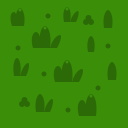

Загрузка урока...
Служба доставки «КодРулит»
auto_stories
Как это устроено
terminal
Пример программы
verified
Правило водителя

car_crash
code
Программа бортового компьютера
Выберите команды ниже...